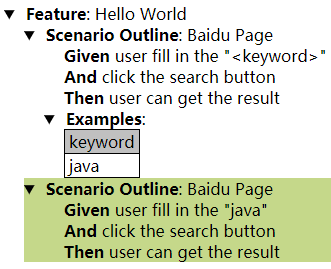

Java+Selenium+Cucumber+Maven/Gradle环境搭建
环境准备
- JDK1.8
- Maven/Gradle
- Eclipse/IDEA
- Cucumber
环境搭建
创建Maven项目（IDEA为例）
update pom文件，引入cucumber和selenium的依賴
1
2
3
4
5
6
7
8
9
10
11
12
13
14
15
16
17<dependencies>
<dependency>
<groupId>io.cucumber</groupId>
<artifactId>cucumber-java</artifactId>
<version>2.4.0</version>
</dependency>
<dependency>
<groupId>io.cucumber</groupId>
<artifactId>cucumber-junit</artifactId>
<version>2.4.0</version>
</dependency>
<dependency>
<groupId>org.seleniumhq.selenium</groupId>
<artifactId>selenium-java</artifactId>
<version>3.14.0</version>
</dependency>
</dependencies>新增feature文件
1
2
3
4
5
6
7
8
9
10
11Feature: Hello World
Scenario Outline: Baidu Page
Given user fill in the "<keyword>"
And click the search button
Then user can get the result
Examples:
| keyword |
| java |生成step:
1
2
3
4
5
6
7
8
9
10
11
12
13
14
15
16private BaiduPage page = new BaiduPage();
@Given("^user fill in the \"([^\"]*)\"$")
public void user_fill_in_the(String keyword) {
page.goToBaidu(keyword);
}
@And("^click the search button$")
public void click_the_search_button() {
page.clickSearchBtn();
}
@Then("^user can get the result$")
public void user_can_get_the_result() {
page.verify();
}新增runner
1
2
3
4
5
6
7@RunWith(Cucumber.class)
@CucumberOptions(
plugin = {"json:target/cucumber/cucumber.json", "html:target/cucumber", "pretty"},
features = {"src/main/resources/feature/abc.feature"})
public class MyRunner {
}运行Runner
1
2
3
4
5
6
7Given user fill in the "java" # BaiduStep.user_fill_in_the(String)
And click the search button # BaiduStep.click_the_search_button()
Then user can get the result # BaiduStep.user_can_get_the_result()
1 Scenarios (1 passed)
3 Steps (3 passed)
0m8.945s查看Report

拓展，改用Gradle
…
Java+Selenium+Cucumber+Maven/Gradle环境搭建
https://skynetboys.github.io/2020/07/02/Java-Selenium-Cucumber-Maven-Gradle环境搭建/